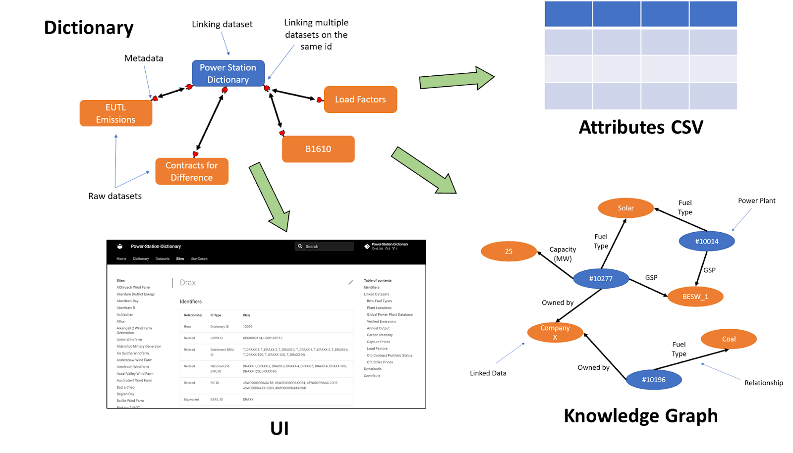
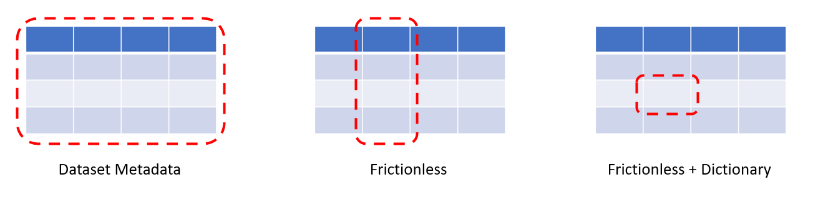

Making Sense of (Energy) Data
Author(s): Ayrton Bourn, Dan Travers
Date: 28th December 2021
Useful information about power system infrastructure, the agents that participate in the system, and their impacts on the climate is stored in databases, files and spreadsheets that are distributed across the internet. Businesses, NGOs and academics are duplicating efforts to find and collate this data into structures that can be used to generate insight. Often this is in the form of custom relational databases where data is duplicated and custom links between tables are established by each user independently.
The challenge of finding data is addressed by the cataloguing of datasets, as in the Subak Data Catalogue. However, once we have the datasets we are looking for, how do we match the data within each? For instance, consider the issue of agreeing on how to refer to a particular power plant. It might be that one dataset refers to the “Drax Power Station”, whilst another dataset might just call it “DRAX”. We assume that rolling out a fully-fledged unique name for each power plant is not possible, so we create a dictionary that contains a list of unique power plant names in a primary dataset and then matches them to equivalent names in external datasets.
This blog outlines the motivation behind, and application of, a tool we have created to address these issues.
What Is It?¶
The ability to describe relationships between assets and datasets is a key piece of digital infrastructure that is needed to produce reports on the current state of the system or enable innovations such as digital twins of the energy system. To this end we created the Data Shiro library, which takes datasets in any form (and their metadata) as inputs, stores the connections between datasets and then outputs a combined view of all the extracted data: a machine-readable knowledge graph describing the links between assets and their associated data, as well as a website that compiles this information: letting the user traverse between the datasets and see the extracted information on individual assets. Taking a decentralised approach to this by directly linking to external data sources helps ensure that information remains up to date whilst also providing flexibility for it to scale as new datasets are added to the network.

What Does This Give You?¶
Firstly, many of these connections between datasets are already created by individuals or organisations, the issue is that they are rarely then made available to the wider community. Even when connections between datasets are published they are often not done so in a standardised format, making it difficult to combine and develop them further. A central place to store and maintain dictionaries allows anyone to link between multiple different data assets. Additionally, by creating a common language for linking datasets together we can begin to build tools that can be used across a much wider data ecosystem.
A further benefit with dictionaries is that we can use them to create a knowledge graph, allowing users to intuitively traverse the many linked datasets and semantically understand the relationships between assets and their data. Providing this semantic understanding is key to enabling more complex search queries, e.g. “Find the total capacity of all onshore wind farms which have experienced curtailment in 2020”, which will become increasingly more important as the data landscape grows and becomes more complex. And lastly, we create a website that displays an aggregate view of the data but split by the entity it relates to rather than the dataset, making it easier to compare across different sources.
How Do We Do This?¶
The glue behind all of this is the metadata describing both the dictionary IDs spreadsheet and the datasets that the dictionary is linked to. Commonly used metadata specifications such as DCAT (a vocabulary for dataset catalogues) describe the dataset as a whole, providing information on the author, date of creation, etc. The Frictionless Data metadata standard, which we use to describe the datasets linked to the dictionary, makes it possible to describe individual columns within a dataset (such as a spreadsheet) with information such as the field name, units, and data type. We have then extended the Frictionless metadata standard to create a new dictionary schema, which can link between common identifiers in the dictionary IDs CSV and those contained within the external datasets. Essentially, by linking Frictionless datasets with a dictionary we can now understand what individual cells within a spreadsheet are describing.

These additions enable us to move from improving the ability of humans to discover datasets to making it easier for machines to automatically find and extract relevant data - a need that will only increase as the number and size of datasets continues to grow. The benefits extend beyond our digital colleagues though - by pivoting data exploration to be about finding objects/assets, which then reveal the datasets (and attributes) they are linked to, we can create a more intuitive search experience. Similar to Google’s move from searching for "Things not Strings", the data dictionary lets us search for "Assets not Datasets".
Challenges¶
There are still challenges along the way, as with any such construction.
Managing many-to-one relationships * Currently, the dictionary can handle one-to-one (e.g. different names for the same power station) and one-to-many (e.g. the different generators that make up a power station) relationships directly through the IDs dataset. * Many-to-one relationships (such as linking power stations to the companies that owe them) are not handled through the IDs dataset but instead can be linked from external resources as with any other entity attribute (like fuel type).
Maintenance * Long-term stewardship of a linked data project is difficult - source URLs disappear, IDs change, and growing complexity adds barriers for new contributors. * We’ve aimed to mitigate these issues as much as possible through automated CI/CD, clear documentation, and modular design of the code-base itself. * By building on existing metadata specifications and open-source tools we also reduce the cognitive overhead needed to get to grips with the Data Shiro library. * Furthermore, we’ve introduced a series of simple Google forms which can be used to easily add new IDs and datasets to the power station dictionary.
Mapping between metadata
* The dictionary is built around being able to link together datasets described using the Frictionless Data metadata specification, however, many datasets use alternative specifications such as CKAN and DCAT.
* To address this we are building mappers which are able to convert between these different specifications.
* Initially, we have focussed our efforts on mapping between common open metadata standards such as CKAN (used by NG, WPD, and LCCC), however, in the long-term we are looking to include mappers from less common specifications such as the one developed by IB1 as part of the MEDA competition.
Way Forwards¶
To illustrate the benefits of such a framework we are building a pilot dictionary focused on improving the discoverability, linkage, and automated extraction of data relating to power stations on the UK system. Power stations were chosen as the first case study due to the high number of datasets they relate to, the wide range of ids used to describe them, and the current duplication in efforts to link them across industry and academia. We're also developing examples that demonstrate how to use the outputted knowledge graph to create a combined/cleaned dataset, as well as entirely new derived data such as calculating carbon intensity from absolute emissions and power output.